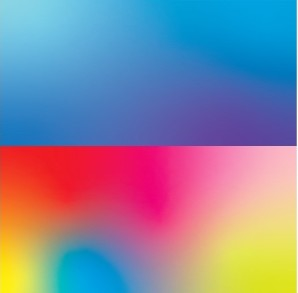

目次
MVを見るポイント！
好きなMVは見つかりましたか？ここからは、MVを見るポイントについて語りたいと思います！ MVは音楽をより深く感じるための映像作品です。 映像・色・ストーリーによって曲の世界観を表現しています。 細かーいところに注目してMVを見ていきましょう
色使いによる印象の違い

MVでは暖色系の映像は温かさや楽しさ、 寒色系は切なさや静けさを表現することが多くあります。 色彩だけでも曲の印象は大きく変わるため、 私は色使いにも注目して鑑賞しています。 例えば、テクノやデジタルの雰囲気にするためには、青みの強い映像に仕上げています。 一方、一色でスタジオ全体の色を統一したり、原色を使っていたりなど、アーティスト本人の明るい雰囲気に合うような映像もあります。
追記：最近のMVでは、暖色と寒色を組み合わせて“感情の揺れ”を表現する手法も増えています。 例えば、サビでは暖色で盛り上げ、Aメロでは寒色で静けさを演出するなど、色彩がストーリーの一部として使われています。
カメラワーク
手持ちカメラやドローン撮影、スローモーションなど、 撮影方法によってMVの雰囲気は大きく変わります。 曲の盛り上がりに合わせたカメラワークを見るのも楽しみの一つです。 MVのあるあるを歌っている、岡崎体育さんの「MUSIC VIDEO」という曲が分かりやすく理解しやすいと思います！ ぜひ見てみてください
追記：ドローン撮影は「広がり」を、手持ち撮影は「親密さ」を演出するために使われることが多いです。 MVの雰囲気を左右する重要な要素なので、ぜひ注目してみてください。
衣装・ファッション
MVではアーティストの衣装も重要な演出です。 曲の世界観に合わせた服装やヘアメイクを見ることで、 より作品のテーマを感じ取ることができます。 特に椎名林檎さんのファッションは、単なる衣装ではなく、彼女の音楽と圧倒的な「表現」そのものです。エロティシズムと知性を持ち合わせている 彼女のスタイルは、時代ごとにキャラを変幻自在に変えながら、常に唯一無二のカルチャーを更新し続けています。
MVを何度も見る理由
一度目では気付かなかった演出や伏線を見つけられることがあります。 そのため私は気に入ったMVは何度も見返して楽しんでいます。